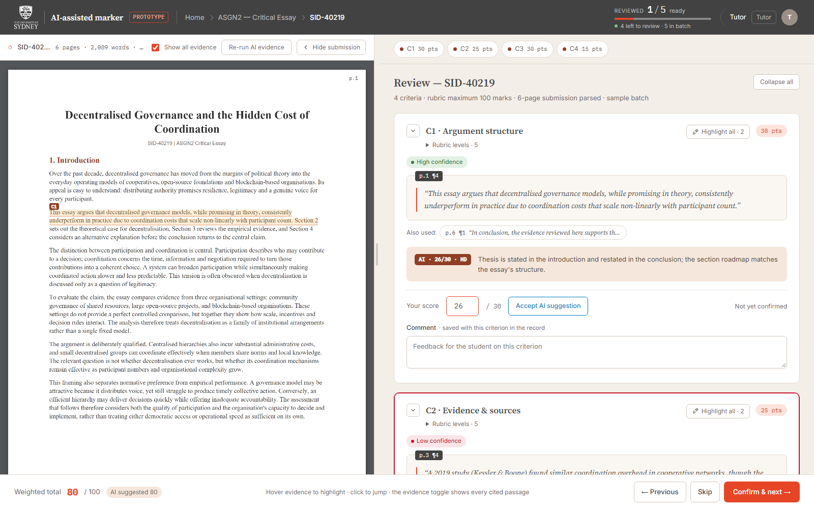

Bring the rubric and submissions
Import an existing rubric, review its criteria, then add PDF, DOCX or text submissions as a marking batch.
An AI-assisted marking workspace that pairs every suggested score with the exact passage behind it—so tutors can verify, adjust and confirm with confidence.

The system handles the searching and organising. The tutor keeps the judgement.
Import an existing rubric, review its criteria, then add PDF, DOCX or text submissions as a marking batch.
The marker retrieves and verifies passages against each criterion before proposing a score, rationale and confidence level.
Tutors compare the submission and evidence side by side, adjust marks or comments, and explicitly confirm the result.
Every criterion is a small, inspectable decision rather than a single opaque total.
“This essay argues that decentralised governance models, while promising in theory, consistently underperform in practice…”
Evidence, rationale, coverage and confidence are surfaced where the tutor makes the decision.
Nothing becomes a final mark until a tutor has reviewed and confirmed the submission.
Each criterion is evaluated against its own levels and evidence requirements, not a generic grade prompt.
The repository includes the FastAPI backend, browser interface, sample batches, evaluation harness and setup instructions.